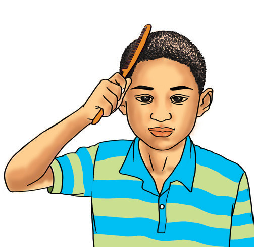
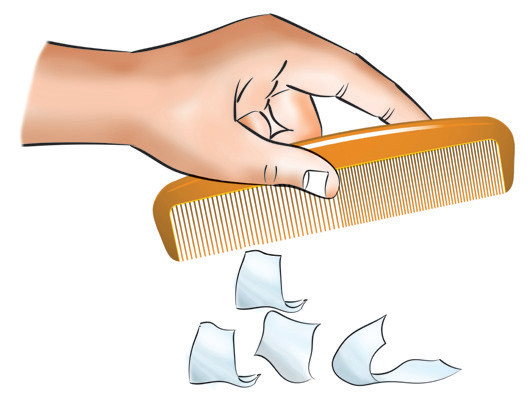

Chapter One
Static electricity
Introduction
Clothes containing nylon often crackle when they are taken off the body. Brushing a latex balloon against one’s face results in the balloon trying to stick to the face. This is due to static electricity, which results from an imbalance of electric charges within or on the surface of a material. In this chapter, you will learn the concept of static electricity, the origin of charges, the fundamental law of static electricity and the detection of charges. You will also learn about conductors and insulators, capacitors, charge distribution along the surface of a conductor and lightning conductors. The competencies developed will enable you to recognise the effects and applications of static electricity in everyday life.
Concept of static electricity
Have you ever noticed that a nylon garment crackles when taken off the body? Sometimes, tiny sparks are often experienced when undressing in the dark. The crackling sound is caused by small electric sparks caused by charge-discharge. The charge is caused by friction between the nylon and your skin, giving rise to static electricity. Pens and combs made of certain plastic materials attract tiny pieces of paper after being rubbed on the hair or synthetic clothing, as shown in Figure 1.1.


Figure 1.1: Charged comb attracts pieces of paper